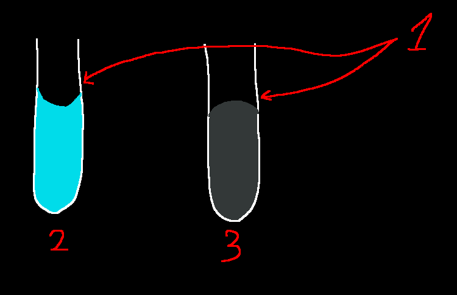

siiky
2023/07/31
2023/07/31
2023/07/31
science,chemistry
Water, the H2O molecule, is a polar molecule, which means some of its regions are partially positive or partially negative -- specifically, the region of the O atom is partially negative, while the region of the H atoms are partially positive. This fact is what makes water molecules "glue" together to form a liquid: O atoms of one water molecule attract slightly to H atoms of other water molecules (and vice versa), making a set of water molecules appear to aggregate as a single "object".
Water has a lower density in the solid state than in the liquid state. This property is in part helpful to life. As an example: imagine a pond, and very cold temperatures; if water was more dense as a solid than as a liquid, once the surface of the pond froze it would sink to the bottom; and then a new surface; and then another; until there was no liquid water left. However, because water is less dense as a solid, the frozen surface stays on top of the liquid water.
Another important property is its high heat capacity, i.e., it takes a lot of energy to heat up a certain amount of water. Because of this, the temperature of a certain body of water doesn't fluctuate much, even if "outside" the temperature fluctuates wildly.
Si is less electronegative than H. Because glass is made of a O/Si lattice, the glass molecules will be polar too, but the Si regions will be even more positive than H in H2O. Due to this polarity difference, O atoms of the H2O molecules are more attracted to Si atoms of the glass molecules than to H atoms of other H2O molecules; and H atoms of the H2O molecules will be more attracted to O atoms of the glass molecules than to those of other H2O molecules. This greater attraction means preference (higher chance) of polar bonding between H2O and the glass molecules.
This is why water forms a concave (2) meniscus (1), instead of a convex (3) one. Hg, for example, forms a convex (3) meniscus (1).
This alone still doens't explain how water "climbs" the glass. For that we can use the fact that atoms, molecules, and their constituents are in constant, chaotic motion, they bump into each other all the time, sometimes raising one molecule above others and making it "stick".
The attraction between equal molecules (e.g. H2O-H2O) is called cohesion, and the attraction between different molecules (e.g. H2O-Si/O) is called adhesion). The reason why e.g. Hg doesn't stick to glass is because it has greater cohesion than adhesion.
The phenomenon where e.g. water (3) "climbs" through e.g. a thin glass tube (1) (or a paper/tissue towel), even against gravity, is called capillary action. If the container holding water (3) is not polar (e.g. plastic), then water won't climb its walls.
Surface tension is what keeps, for example, those water strider insects afloat. And it happens simply because water has a greater attraction to H2O molecules than to air. This is also the reason why you can carefully lay a clip on the water without it sinking, and why an overfilled cup flows forms a bulge without spilling.
How does sweating cool our bodies? Temperature is the average thermal energy of a certain body. With sweat (i.e. water) covering e.g. our arms (assuming the arm is hot), the arm molecules will be moving/rotating/&c a lot (because thermal energy is actually kinetic energy). Sometimes they'll hit water molecules and transfer some of their energy to the water molecules. The more energy a water molecule has, the more likely it is to split free from the rest of the water molecules. When a high-energy water molecule flies out, the everage thermal energy of the sweat and your arm goes down.
The "escape" of water molecules from the rest is called "evaporation".
Heat of vaporization is the amount of energy necessary for a molecule to evaporate. Water has a higher heat of vaporization than e.g. ethanol (2260 J/g vs 841 J/g). This is because, on a molecular level, not only does water have more hydrogen bonds, they're stronger too.
The amount of heat needed to raise 1g of a substance by 1°C. The specific head of water is called "calorie".
Water has a high specific heat because of the hydrogen bonds. When there's energy transfer into a body of water, the energy is actually being used to first break the hydrogen bonds, and only then to increase the thermal energy of a particular molecule.